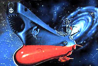
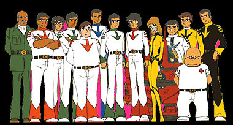
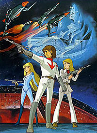
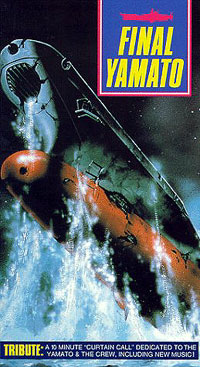
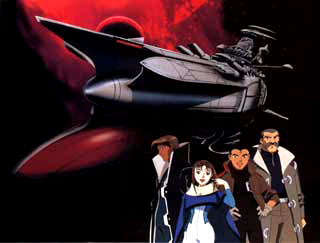
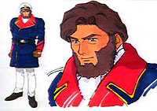

|
por
Gustavo Leo
 Se
voc estiver como eu na casa dos 30 anos (mas com corpinho de 20), certamente
se lembrar de um desenho animado exibido não início dos anos oitenta, época. Em
que a Xuxa debutou não mundo da tev atravs da extinta Manchete. O desenho em
questo, Patrulha Estelar (considerada a Jornada nas Estrelas japonesa),
fez a cabea da molecada daquela época. fissurada pelas aventuras da Argo e do
capito Derek Wildstar. "Uchuu Senkan Yamato" ("Encouraado
Espacial Yamato"), ttulo original do anime, considerada por muitos como
a maior saga espacial em anime de todos os tempos. Se
voc estiver como eu na casa dos 30 anos (mas com corpinho de 20), certamente
se lembrar de um desenho animado exibido não início dos anos oitenta, época. Em
que a Xuxa debutou não mundo da tev atravs da extinta Manchete. O desenho em
questo, Patrulha Estelar (considerada a Jornada nas Estrelas japonesa),
fez a cabea da molecada daquela época. fissurada pelas aventuras da Argo e do
capito Derek Wildstar. "Uchuu Senkan Yamato" ("Encouraado
Espacial Yamato"), ttulo original do anime, considerada por muitos como
a maior saga espacial em anime de todos os tempos.
 O
desenhista Reiji Matsumoto criou o mang original, em 1972. Juntamente
com o produtor Yoshinobu Nishizaki, transps sua obra para a TV, em 1974.
A saga da nave espacial Argo (ou Yamato, não original japons), que defendia a
Terra de todo tipo de ameaa com sua corajosa tripulao, cativou os fãs mundo
afora. Os principais personagens, conhecidos no Brasil pelos nomes utilizados
nos EUA (entre parnteses, os nomes originais japoneses), eram Derek Wildstar
(Susumu Kodai), Lola (Yuki Mori), Stephen Sandor (Shiro Sanada),
Mark Venture (Daisuke Shima) e o Capito Abraham Avatar (Juzo Okita),
além do vilo Desslock (Deslar). A nica que teve o nome aportuguesado
foi Lola, que em inglês se chamava Nova Forrester.
O primeiro arco de
histórias, com 26 episódios, ficçãou conhecido como "The Questá for Iscandar"
("A Busca por Iscandar") e foi exibido não Japo entre 1974 e 1975..Essa
primeira fase não fez tanto sucesso por lá e em 1977 foi condensada em
um longa-metragem para cinema, batizado Space Battleship Yamato (Encouraado
Espacial Yamato). O filme foi um xito de bilheteria e animou os produtores a
continuar a saga espacial não podemos nos esquecer do seguinte fato: a primeira
Série - "The Questá for Iscandar" - datada de 1974, três anos antes
da estria de "Star Wars" nos cinemas norte-americanos. A Série, indita
no Brasil, narra o primeiro encontro da Terra com o arquiinimigo, o generalssimo
Desslok, e traz o mtico Capito Avatar não comando da nave.

O segundo longa chegou aos cinemas em 1978. Com o ttulo "Farewell to
Space Battleship Yamato - In the Name of Love" ("Adeus ao Encouraado
Espacial Yamato - Em Nome do Amor") ou "Arrivederci Yamato"
(Adeus, Yamato), também fez muito sucesso. Com essa história ocorreu o inverso
do que aconteceu na primeira Série de TV. Sua trama foi esticada e transformada
na segunda Série de 26 episódios, "O Cometa Imprio" ("The
Comet Empire"), exibida não Japo entre 1978 e 1979 e no Brasil não começo
da decada de 80. O final do filme, muito trgico, foi alterado na Série de TV.
A versao exibida no Brasil foi a americana, inclusive com o tema de abertura em
inglês.
Em 1979 foi produzido o telefilme "Space Battleship Yamato:
The New Voyage" ("Encouraado Espacial Yamato: A Nova Viagem").
O Imprio Golba destroi o planeta Gamilon e coloca Iscandar fora de sua orbita
Em Iscandar vivem apenas Starsha, Alex Wildstar e a filha deles, a pequena Sasha.
O Yamato recebe um pedido de socorro de Deslock e entra na luta para defender
Skandar. A nave principal da frota Golba consegue resistir ao ataque dos aliados.
Para evitar o sacrifcio de Deslock no auge da batalha, Star-sha se rende e autoriza
a descida da nave Golba em Skandar..Ento, ela coloca Alex e Sasha num mdulo
de fuga. Enquanto a nave Golba desce, Star-sha aperta um boto e Skandar explode
violentamente, levando consigo a nave invasora. Em seguida veio a terceira Série,
novamente com 26 episódios, chamada "A Crise do Sol" ("Bolar
Wars"), exibida na Brasil tambem pela extinta Rede Manchete.  Na
abertura em japons exibida no Brasil (inclusive a cano tema), via-se o ttulo
original, Yamato III.
O quarto filme, "Be Forever, Yamato"
("Para Sempre, Yamato") chegou aos cinemas em 1980. O mesmo Imprio
Golba do filme anterior ataca a Terra para se vingar. Eles plantam uma bomba capa
de apagar toda a vida orgnica do planeta. A nica chance do Yamato vencer ir
para o misterioso planeta inimigo, que fica atrês de uma nebulosa negra. A jovem
Sacha se sacrifica não final do filme. Sensacional, o filme, o primeiro da série
em widescreen, uma das  aventuras
mais épicas de toda a saga. Finalmente, em 1983, o derradeiro filme foi
produzido, "Final Yamato" ("Yamato, o Final"). O terrvel
Imprio Dinguil consegue o impossível: com um mega sistema de teleporte, eles
trazem todo seu sistema estelar para nossa dimenso. Seu plano atrair o planeta
aquatico de Aquarius para a Terra. Conforme se aproxima da Terra, Aquarius comea
a se desfazer em vagalhes capazes de engolir nosso planeta. Sem alternativa,
o ressucitado Capito Avatar, agora em comando da Yamato, ordena que a tripulao
fuja, enquanto ele fica para detonar a Arma de Ondas.A violenta exploso faz a
gua retroceder e a Terra salva novamente. A Patrulha Estelar chora a morte
do Capito e o fim da nave que serviu de lar para eles durante muitas viagens
pelo espao. Na epilogo, Wildstar e Lola finalmente se casam.
Houve
uma tentativa de modernizar a Série, com Yamato 2520, mini-Série
ao estilo Jornada nas Estrelas: A Nova Geração, produzida
diretamente para o mercado de vídeo, em 1994. Apesar do design da espaonave ter
sido idealizado por Syd Mead ("Blade Runner", "Aliens"),
a história da Série não agradou aos fãs mais fanáticos. A história
comeca 300 anos após os eventos de "Final Yamato". Os humanos
se espalharam pela galáxia e entraram em conflito com o Império
Selene. Depois de uma guerra que durou 100 anos, décadas após
o fim da guerra, humanos descobrem os destroços da trigésima
nave chamada Yamato, que lutou na guerra, Com a ajuda do ex-capitão da
nave, jovens do planeta colônia colocam a nova Yamato em ação
novamente, e vendo isso como uma afronta ao tratado de paz, ambos os lados reiniciam
a guerra. A série, programada para 6 episodios, teve apenas 4 episodios
lancados não Japao em video, e ate hoje nao se sabe como a historia da Yamato do
ano de 2520 acabou. Uma pena, por que a animacao, a trilha sonora e o desenho
de producao de Mead eram excelentes. 
Outra tentativa de trazer a Patrulha Estelar de volta, foi o filme
chamado Yamato Rebirth, que foi cancelado devido a disputas judiciais sobre
os direitos autorais da saga. Apenas
um video de 90 minutos detalhando a pré-produção do filme
e mostrando os storyboards e testes de animacao foi lancado não Japão. Em
Yamato Rebirth, 20 anos apos a destruição do Yamato em
Final Yamato, a Terra seria amecada por uma grande buraco negro e um
já adulto e barbado capitão Wildstar, junto com sua filha adolescente
chamada Myuko e sua antiga tripulação, tem como missão resgatar
os destroços do Yamato original, agora encontrados nos asteróides
de gelo do que era antes o planeta Aquarius, reconstruir a nave e partir em busca
da salvação da Terra. Infelizmente, o que seria uma volta triunfal
da tripulação da série original de Patrulha Estelar,
nao chegou a sair do papel.
 Mas
os fãs do Yamato devem se animar! Leiji Matsumoto, co-criador da Patrulha
Estelar, está preparando dois novos projetos: um manga chamado Greaté Yamato,
que mostra os decendentes da tripulação original em 3199, com uma
nova missão em uma Yamato bem parecida com a original, e uma nova Série
em vídeo baseada na original: "Dai Guinga Dai Yamato 7 vs. 7"
(algo como "Galxia Imortal Infinita: Yamato 7 vs. 7"). A nova Série
ter 52 episódios, acontecer não ano 3199 e desconsidera completamente os eventos
de Yamato 2520 (isso mesmo, em Yamato, como Jornada, tambem existe
o cânon e o não-canônico). Descendentes dos tripulantes do
Yamato original so acionados quando uma nova ameaa chega Terra: os alienígenas
"Medanoids". As foras de defesa do planeta estão escassas e decide-se
reativar o "aposentado" Encouraado Yamato a fim de que se possa combater
os invasores.
A odisséia continua... |